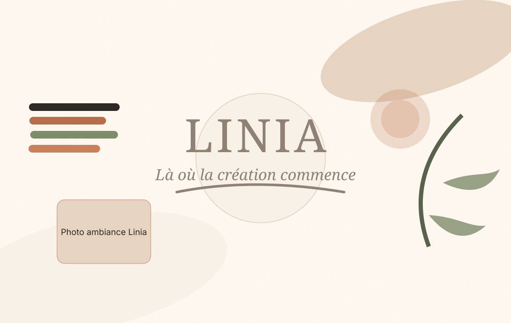

Photo boutique
Boutique créative
Matériel beaux-arts, loisirs créatifs, papeterie et conseils personnalisés.
Explorer la boutiqueLa Maison créative · Remouchamps
Linia est un concept store créatif où l’on vient trouver du matériel de qualité, participer à un atelier, boire un café et laisser naître ses idées.
Là où la création commence

Que vous soyez débutant, passionné ou simplement curieux, Linia vous accueille dans un espace chaleureux où la créativité se découvre sans pression.
Matériel beaux-arts, loisirs créatifs, papeterie et conseils personnalisés.
Explorer la boutiqueDes moments créatifs accessibles pour apprendre, essayer et partager.
Voir les ateliersUn espace pour se poser, échanger et trouver l’inspiration.
Découvrir le lieuDes ateliers en petits groupes pour découvrir une technique, poser vos questions et repartir avec l’envie de continuer.
65 €
Réserver ma place45 €
Réserver ma place38 €
Réserver ma placeChez Linia, chaque produit est sélectionné pour sa qualité, son utilité et sa capacité à accompagner vos envies créatives.
Pour découvrir l’aquarelle avec du matériel simple et fiable.
32 €
Voir le produitUn support agréable pour tester, apprendre et conserver ses essais.
18 €
Voir le produitPour ajouter de la couleur sur papier, bois ou objets décoratifs.
24 €
Voir le produitPour offrir un atelier, du matériel ou un moment créatif.
50 €
OffrirCoin café et détente
Linia, c’est aussi un coin café pour prendre le temps. Un endroit où l’on peut boire un café, feuilleter un livre, discuter d’une idée ou simplement faire une pause dans un univers créatif.
Linia met en lumière des artistes et artisans de la région à travers des créations originales, des collaborations, des expositions et des ateliers invités.
L’histoire de Jennifer
Linia est née de l’envie de créer un lieu humain, accessible et inspirant. Un endroit où l’on peut apprendre, poser des questions, rencontrer des créateurs locaux et retrouver le plaisir de créer.
Découvrir l’histoire de LiniaVous êtes guidé selon votre niveau, votre budget et vos envies.
Les ateliers sont pensés pour apprendre sans pression.
Une sélection courte, qualitative et utile.
Commandez en ligne et récupérez gratuitement chez Linia.